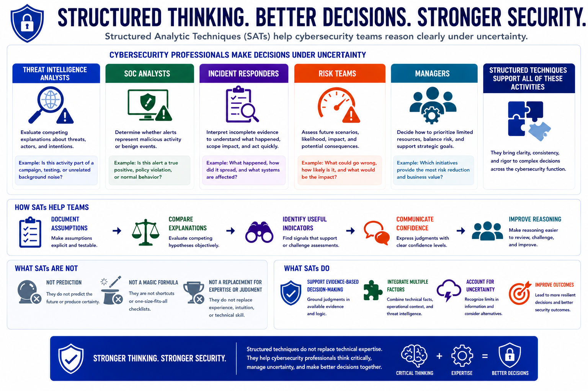

Structured Analytic Techniques
Applying SATs in Cybersecurity
Connecting to LMS... Progress: in progress
Version 1.0 | Date: 2026-06-16 | Educational overview of structured analytic techniques for judgment under uncertainty.

Narration
Cybersecurity professionals regularly make decisions under uncertainty. Threat intelligence analysts evaluate competing explanations. SOC analysts determine whether alerts represent malicious activity.
Incident responders interpret incomplete evidence, risk teams assess future scenarios, and managers decide how to prioritize limited resources. Structured techniques can support all of these activities.
SATs help teams document assumptions, compare explanations, identify useful indicators, and communicate confidence. They make reasoning easier to review and improve.
Structured techniques do not replace technical expertise. They support evidence-based decision-making when technical facts, operational context, and uncertainty must be considered together.